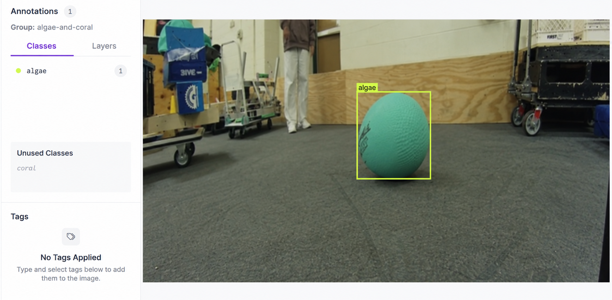
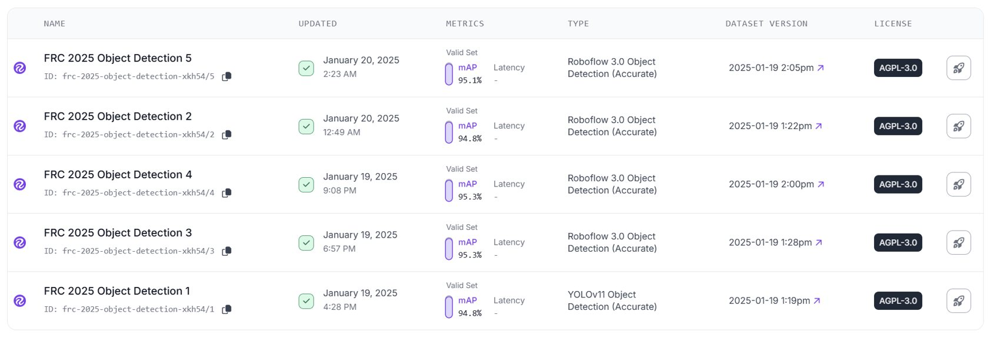
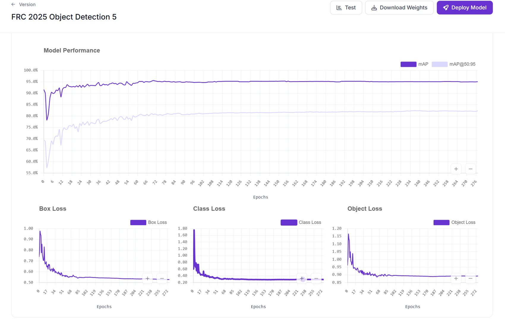
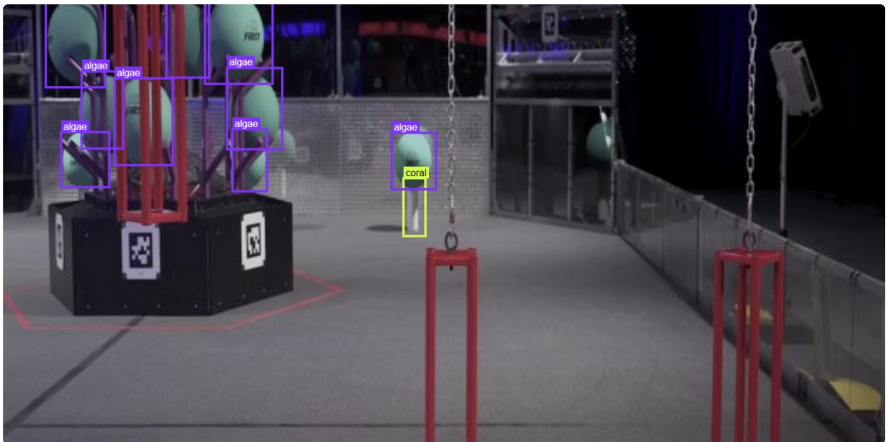

Algae
Detected readily in the reported robot tests.
Photographing and labeling game pieces, training a detector, and testing it on Limelight—from validation results to the limits of real robot detection.
The detector needed to distinguish the two game-piece types in camera images and run on the robot’s Limelight. Training was only part of the task: I also needed to see which detections held up when the model was used on the robot.
I photographed coral and algae and annotated the images in Roboflow. The labeled bounding boxes supplied the examples used to train the detector.

Five Roboflow model versions reported validation mAP between 94.8% and 95.3%. These results describe the validation data; they do not establish the detector’s accuracy on the field.


I used Google Colab to train and export a TFLite model for Limelight. Deployment put the model into the camera system where I could test its behavior on the robot.
Robot testing exposed differences that the headline validation score could not explain on its own. Algae were detected readily, while coral detection was more stable within about 70 cm. False detections remained a challenge.
Detected readily in the reported robot tests.
More stable detection within about 70 cm.
False detections still needed further investigation.

The validation metrics helped me compare models, but robot testing showed the limits that mattered in use: detection range, differences between game-piece types, and false positives.
A useful next investigation would separate tests by distance and game-piece type, record false detections, and use those failures to guide new training examples.